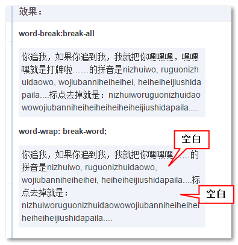

Document
word-break
值
normal 默认
break-all CJK(Chinese/Japanese/Korean) 文本间单词断行
keep-all 不允许CJK文本中的单词换行，只能在单角空格或连字符处换行， 非CJK文本的行为实际与normal一致
------------
word-wrap
normal
break-word 一行单词中实在没有其他靠谱的换行点的时候换行。
word-wrap --> css3 中的 overflow-wrap

wbba(微博吧) word-break: break-all;
wwbw(我五百万) word-wrap: break-word;
word-sapcing 单词之间的间距
white-space 是否换行显示
white-space:normal;
white-space:nowrap;
white-space: pre;
white-space: pre-wrap;
white-space: pre-line;
pre：
原封不动的保留你输入时的状态，空格、换行都会保留，并且当文字超出边界时不换行。等同 pre 元素效果
nowrap：
与normal值一致，不同的是会强制所有文本在同一行内显示。
pre-wrap：
与pre值一致，不同的是文字超出边界时将自动换行。
pre-line：
与normal值一致，但是会保留文本输入时的换行。